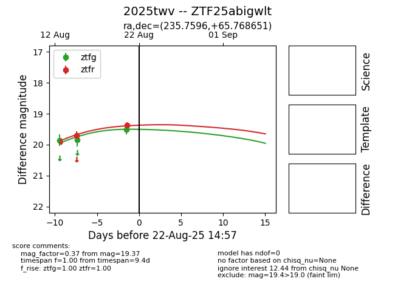

Target 2025twv at 2025-08-22 14:57, see:
FINK: fink-portal.org/ZTF25abigwlt
Lasair: lasair-ztf.lsst.ac.uk/objects/ZTF25abigwlt
ALeRCE: alerce.online/object/ZTF25abigwlt
TNS: wis-tns.org/object/2025twv
YSE: ziggy.ucolick.org/yse/transient_detail/2025twv
alt names
ZTF25abigwlt (ztf,alerce)
2025twv (tns,yse)
coordinates:
equatorial (ra, dec) = (235.7596,+65.76865)
galactic (l, b) = (100.4317,+43.10879)
photometry
last ztfg=19.51, ztfr=19.37
3 ztfg, 2 ztfr detections
